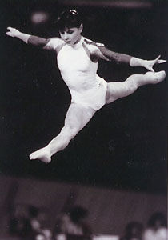

Gabriela Potorac (ROM)
1988 Olympic V Silver Medalist
1989
European B Champion

Medal Total
- Olympic Games: 2 Silver, 1
Bronze
- World Championships: 1
Silver, 1 Bronze
- European Championships: 1
Gold
Gabriela was born on February 6,
1973 in Bacau. She began gymnastics at age 6 and made rapid progress,
moving to the Cetate Deva club at age 12. Her first major
international competition was the 1988 Olympic Games, where she won 3
medals. She had more success in 1989, taking the European beam title and
winning a bronze medal at the World Championships on the same event.
Potorac retired in 1990 and moved to Japan to coach. Today, she lives in
Matsuyama with her Japanese husband.
Competition Results
- 1986
- Catania Cup: 1st AA, 1st V, 1st UB, 1st
B, 1st FX
Goodwill Games: 4th AA, 4th V, 5th UB, 7th FX
- Jr. European Championships: 6th AA, 3rd UB, 4th V, 4th
FX
- Jr. FRA-ROM Dual Meet: 1st Team, 2nd AA
Jr. Friendship Tournament (Druzhba): 2nd Team, 3rd UB, 5th V
- Leningrad International: 2nd AA, 2nd B,
3rd V
- Moscow News: 2nd FX, 3rd V
ROM Championships: 4th AA
-
- 1987
- Cottbus International: 1st AA
- Jr. Balkan Championships: 1st AA, 1st UB, 1st B
Jr. Friendship Tournament (Druzhba): 1st Team, 5th AA, 1st
B
- Kosice International: 2nd AA, 1st UB, 2nd FX, 4th B,
5th V
ROM Championships: 3rd AA
ROM-ITA Dual Meet: 1st Team, 4th AA
-
- 1988
- American Cup: 5th AA
- Balkan Championships: 1st Team, 1st AA
- Blume Memorial: 2nd AA, 1st V, 1st UB, 1st FX, 3rd B
- Cottbus International: 2nd AA, 1st UB
- Gander Memorial: 1st AA
- International Mixed Pairs: 3rd Team
- Jr. European Championships: 2nd AA, 1st B, 2nd UB, 3rd
FX, 4th V
- Olympic Games: 2nd Team, 4th AA, 2nd
V, 3rd B
- SUI-ROM-CSSR Tri-Meet: 3rd AA
- Swiss Cup: 1st AA
-
- 1989
- European Championships: 4th AA, 1st B,
4th UB
- ROM-CSSR Dual Meet: 1st Team, 3rd AA
- World Championships: 2nd Team, 16th
AA, 3rd B, 5th UB, 6th V
1990
Dutch Open: 18th AA
This page was last updated on February 1, 2014.
© Gymn Forum